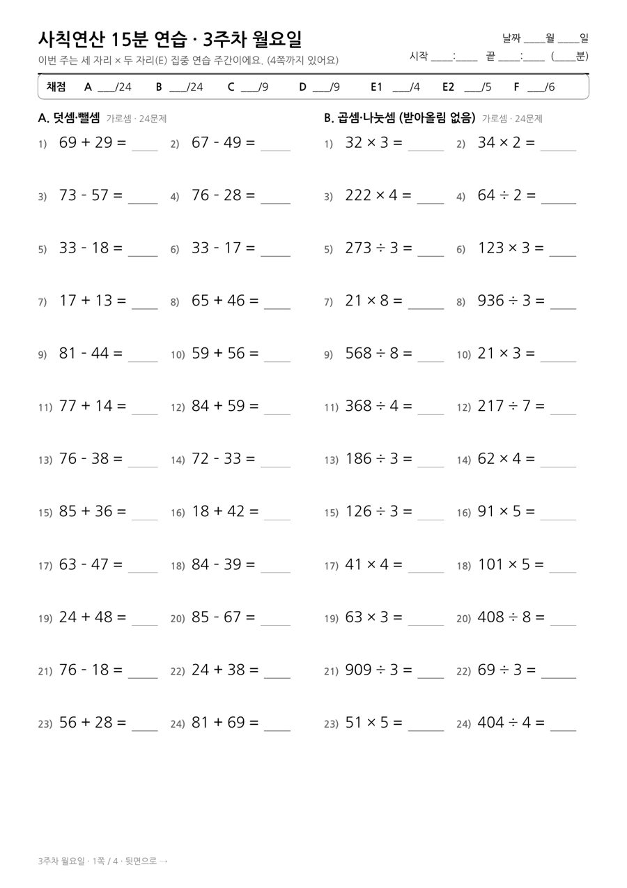
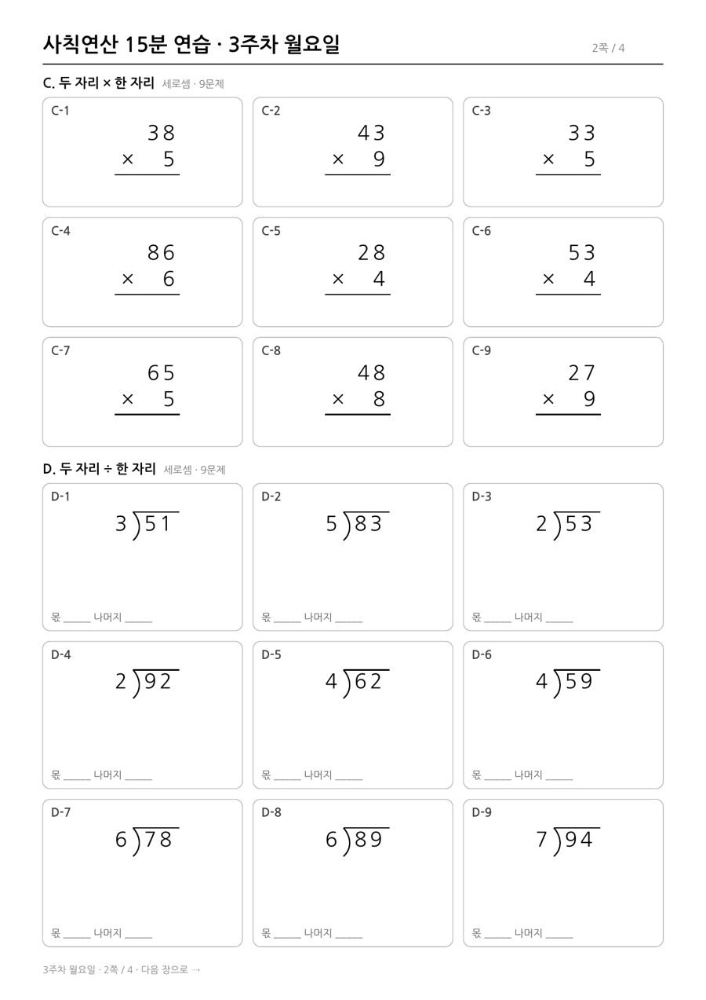
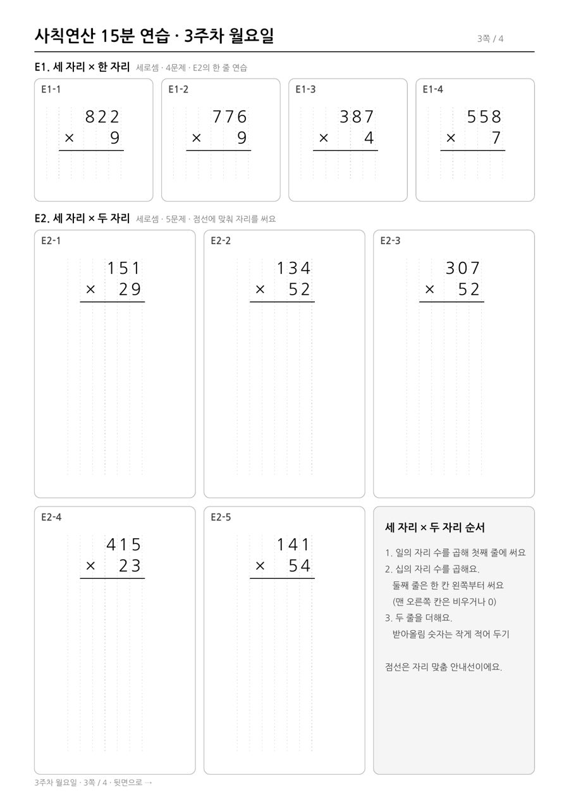
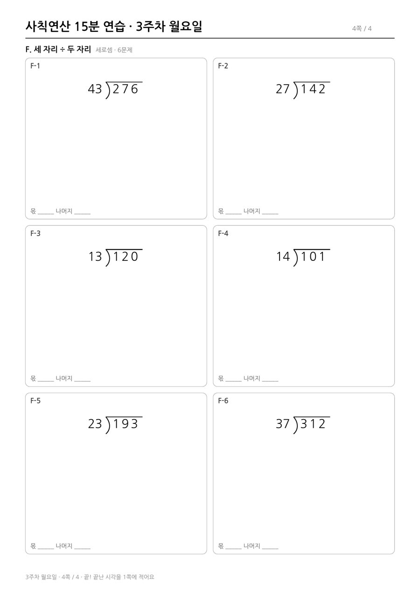

1주차를 풀어 보니 다른 유형은 대부분 맞혔는데, 세 자리 × 두 자리 곱셈만 자주 틀렸어요. 그래서 3주차는 이 유형만 단계로 나눠 집중 연습하게 바꿨어요. 나머지 유형은 1·2주차와 같아요.
한 번에 한 가지만 바꿔요. E2를 90% 넘게 맞히면 다음 단계에서 받아올림이 많은 원래 난이도로 돌아가요.
| 유형 | 형식 | 문제 수 | 예시 | |
|---|---|---|---|---|
| A | 덧셈·뺄셈 (받아올림·받아내림 있는 두 자리 수) | 가로셈 | 24 | 47 + 38 |
| B | 곱셈·나눗셈 (받아올림 없음) | 가로셈 | 24 | 41 × 7, 287 ÷ 7 |
| C | 두 자리 × 한 자리 (일의 자리 받아올림) | 세로셈 | 9 | 47 × 6 |
| D | 두 자리 ÷ 한 자리 (받아내림, 나머지) | 세로셈 | 9 | 77 ÷ 3 |
| E1 | 세 자리 × 한 자리 (받아올림 1~2번) | 세로셈 | 4 | 387 × 4 |
| E2 | 세 자리 × 두 자리 (받아올림 1~2번) | 세로셈 | 5 | 415 × 23 |
| F | 세 자리 ÷ 두 자리 (몫 어림, 받아내림) | 세로셈 | 6 | 295 ÷ 48 |




1·2주차가 아직 없다면 사칙연산 2주 치 #1부터 시작해 보세요.